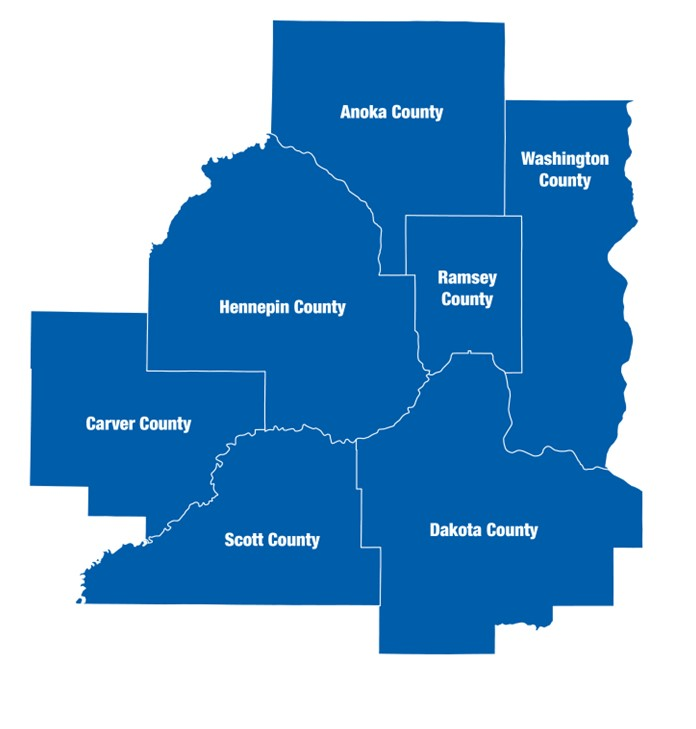

Greenhouse Gas Emissions Scenario Planning
February 2023
Metropolitan Council
Charlie Zelle | Chair | Raymond Zeran | District 9 |
Judy Johnson | District 1 | Peter Lindstrom | District 10 |
Reva Chamblis | District 2 | Susan Vento | District 11 |
Christopher Ferguson | District 3 | Francisco J. Gonzalez | District 12 |
Deb Barber | District 4 | Chai Lee | District 13 |
Molly Cummings | District 5 | Kris Fredson | District 14 |
John Pacheco Jr. | District 6 | Phillip Sterner | District 15 |
Robert Lilligren | District 7 | Wendy Wulff | District 16 |
Abdirahman Muse | District 8 |

The Metropolitan Council is the regional planning organization for the seven-county Twin Cities area. The Council operates the regional bus and rail system, collects and treats wastewater, coordinates regional water resources, plans and helps fund regional parks, and administers federal funds that provide housing opportunities for low- and moderate-income individuals and families. The 17-member Council board is appointed by and serves at the pleasure of the governor.
On request, this publication will be made available in alternative formats to people with disabilities. Call Metropolitan Council information at 651-602-1140 or TTY 651-291-0904
Disclaimer
This report aims to evaluate the effectiveness of greenhouse gas (GHG) mitigation strategies at the city level. It is intended to provide information that can be used to support policy discussions and educational purposes. Please note that the report is for informational purposes only and does not constitute official recommendations or policy decisions.
Executive Summary
The Research Unit of Community Development at the Metropolitan Council has prepared the following report, which presents a range of strategies that the City of Minneapolis could adopt to reduce greenhouse gas emissions relative to a “Business as Usual” scenario. These strategies are divided into three categories: stationary energy (building sector), transportation, and land use and forestry. It is worth noting that the greenhouse gas emissions estimates presented in this report may differ from those found in the Minneapolis Greenhouse Gas Inventory due to differences in methodology. The strategies included in this report were decided in a series of stakeholder meetings conducted in 2020.